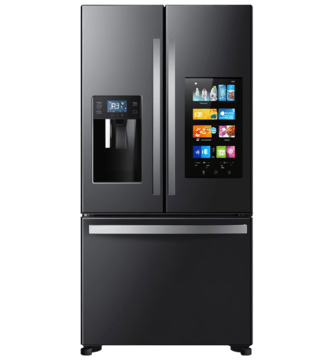
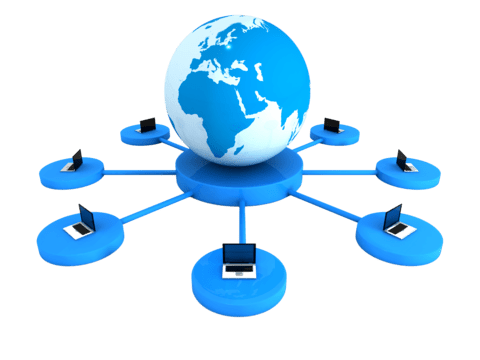

Кто кого?
как проблема межкультурной коммуникации

Культура - совокупность форм деятельности и кодов, предписывающих человеку поведение.
Исследователь должен выбрать, с какого кода начать, чтобы в этой связи понимать остальное
Линия и сеть
Линия
- Носителькнига
- Восприятиеот начала до конца
- Логикапричина => следствие
- Социуминдивидуализм
- Государствовертикаль
Сеть
- экранНоситель
- «всё сразу»Восприятие
- резонансЛогика
- массаСоциум
- горизонтальСвязи
В сознании действуют оба режима, но ведущий - один
Книгопечатание -kat- катализатор
Последовательность становится «само собой разумеющейся» нормой восприятия и мышления
Одновременность связывает всех сразу
Телеграф, телефон, пресса, радио, ТВ; сообщения понятны всем
Ч. Кули: «первичная группа» - непосредственно общающиеся люди разных культур, находящие общий язык

Кто взял инициативу
Линия
Федеральное агентство по ЧС приостановило работу.
Вертикаль встала
Сеть
Occupy Wall Street через электронные ресурсы запустили «Occupy Sandy».
Волонтёры собрались и быстро помогли пострадавшим
Роль государства оттеснена на второй план. Электронный собеседник стал предпочтительной формой межкультурной коммуникации
Что происходит с человеком, когда побеждает одновременность
- Падает интерес к культуре чтения
- Возникают издания, где каждое сообщение значимо само по себе
- Чтение без умственных усилий ухудшает память и наблюдательность
- Последовательность и логичность уходят на второй план
- События начинают восприниматься как миф, без причин и следствий
Свойства мифа и ТВ:
| Миф | ТВ |
|---|---|
| «Всё сразу» | Мозаичность |
| Центр в любой точке | Резонанс |
| Чувственная наглядность | Тактильность |
В русском языке понятие одно, в английском же - два, это создаёт путаницу.
Cross-cultural communication - Кросскультурная коммуникация
Причины, побуждающие людей преодолевать культурные различия.
Intercultural communication - Межкультурная коммуникация
Глобальная коммуникация, особенно в организациях.
Так кто же кого?
В сознании работают оба режима. Однако какой из них главный - решает техника общения
Технологии меняют не только коммуникацию, но и самого человека